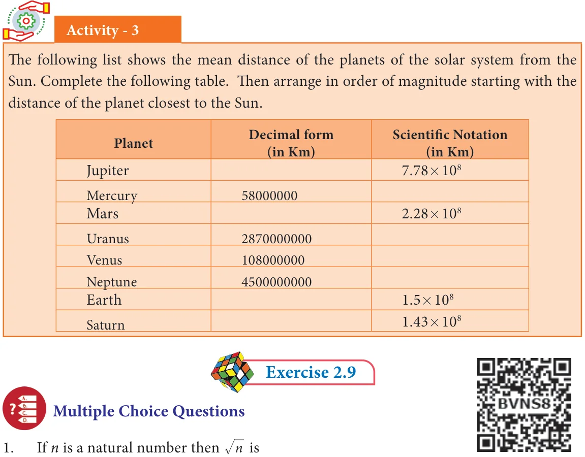
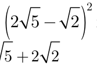

<!DOCTYPE html>
<html lang="en">
<head>
<meta charset="UTF-8">
<meta name="viewport" content="width=device-width,initial-scale=1">
<title>Exercise 2.9 — Real Numbers</title>
<meta name="description" content="Class 9 Mathematics · Real Numbers · Exercise 2.9">
<link rel="icon" href="data:image/svg+xml,<svg xmlns='http://www.w3.org/2000/svg' viewBox='0 0 100 100'><text y='.9em' font-size='90'>📘</text></svg>">
<link rel="stylesheet" href="../../../assets/book.css">
<link rel="stylesheet" href="https://cdn.jsdelivr.net/npm/katex@0.16.11/dist/katex.min.css" crossorigin="anonymous">
</head>
<body>
<header class="topbar">
<div class="topbar-in">
  <div class="crumb">
    <span class="c1"><a href="../../../index.html">Library</a> · <a href="../../index.html">Class 9 Mathematics</a></span>
    <span class="c2">Real Numbers · Exercise 2.9</span>
  </div>
  <a class="tb-btn" data-nav="prev" href="../../02-real-numbers/16-exercise-2.8/index.html" title="Exercise 2.8">←</a>
  <details class="drawer"><summary class="tb-btn" title="Sections in this chapter">☰</summary>
<div class="drawer-panel"><div class="dh">Real Numbers</div><a href="../01-chapter-opener/index.html">Chapter opener; 2.1 Introduction</a><a href="../02-rational-numbers-2.2/index.html">2.2 Rational Numbers</a><a href="../03-exercise-2.1/index.html">Exercise 2.1</a><a href="../04-irrational-numbers-2.3/index.html">2.3 Irrational Numbers</a><a href="../05-exercise-2.2/index.html">Exercise 2.2</a><a href="../06-decimal-representation-to-identify-irrational-numbers-2.3.6/index.html">2.3.6 Decimal Representation to Identify Irrational Numbers</a><a href="../07-exercise-2.3/index.html">Exercise 2.3</a><a href="../08-real-numbers-2.4/index.html">2.4 Real Numbers</a><a href="../09-exercise-2.4/index.html">Exercise 2.4; 2.5 Radical Notation</a><a href="../10-exercise-2.5/index.html">Exercise 2.5</a><a href="../11-surds-2.6/index.html">2.6 Surds</a><a href="../12-exercise-2.6/index.html">Exercise 2.6</a><a href="../13-rationalisation-of-surds-2.7/index.html">2.7 Rationalisation of Surds</a><a href="../14-exercise-2.7/index.html">Exercise 2.7</a><a href="../15-scientific-notation-2.8/index.html">2.8 Scientific Notation</a><a href="../16-exercise-2.8/index.html">Exercise 2.8</a><a href="../17-exercise-2.9/index.html" aria-current="page">Exercise 2.9</a><a href="../18-summary/index.html">Points to Remember</a><a href="../19-ict-corner/index.html">ICT Corner-1</a></div></details>
  <a class="tb-btn" data-nav="next" href="../../02-real-numbers/18-summary/index.html" title="Points to Remember">→</a>
  <button class="tb-btn" data-theme-toggle title="Toggle light / dark" aria-label="Toggle light or dark theme">◐</button>
</div>
<div class="progress"><span style="width:24.3%"></span></div>
</header>
<main class="wrap">
<div class="sec-head">
  <p class="eyebrow"><a href="../index.html">Chapter 2 · Real Numbers</a></p>
  <h1>Exercise 2.9</h1>
  <p class="sec-meta">Textbook pages 34–36 · 4 figures</p>
</div>
<article class="prose">
<ul class="qlist">
<li><span class="mk">4.</span><span class="lt">Represent the following information in scientific notation:</span></li>
<li><span class="mk">(i)</span><span class="lt">The world population is nearly 7000,000,000.</span></li>
<li><span class="mk">(ii)</span><span class="lt">One light year means the distance 9460528400000000 km.</span></li>
<li><span class="mk">(iii)</span><span class="lt">Mass of an electron is 0.000 000 000 000 000 000 000 000 000 00091093822 kg.</span></li>
<li><span class="mk">5.</span><span class="lt">Simplify:</span></li>
<li><span class="mk">(i)</span><span class="lt">\((2.75 \times 10\) ) \(+ (1.23 \times 10\) ) (ii) \((1.598 \times 10\) ) \(- (4.58 \times 10\) )</span></li>
</ul>
<ul class="qlist">
<li><span class="mk">(iii)</span><span class="lt">\((1.02 \times 10^{10}) \times (1.20 \times 10 - ^{3})\) (iv) \((8.41 \times 10^{4})\) ' \((4.3 \times 10^{5})\)</span></li>
</ul>
<figure class="fig table-fig wide"></figure>
<p>(1) always a natural number. (2) always an irrational number. (3) always a rational number (4) may be rational or irrational</p>
<ul class="qlist">
<li><span class="mk">2.</span><span class="lt">Which of the following is not true?.</span></li>
</ul>
<p>(1) Every rational number is a real number. (2) Every integer is a rational number. (3) Every real number is an irrational number. (4) Every natural number is a whole number.</p>
<ul class="qlist">
<li><span class="mk">3.</span><span class="lt">Which one of the following, regarding sum of two irrational numbers, is true?</span></li>
</ul>
<p>(1) always an irrational number. (2) may be a rational or an irrational number. (3) always a rational number. (4) always an integer.</p>
<ul class="qlist">
<li><span class="mk">4.</span><span class="lt">Which one of the following has a terminating decimal expansion?.</span></li>
</ul>
<p>(1) 645 (2) 98 (3) 1514 (4) 121</p>
<ul class="qlist">
<li><span class="mk">5.</span><span class="lt">Which one of the following is an irrational number</span></li>
</ul>
<p>\((1) 25 (2) 9 4 (3) 117 (4) \pi\)</p>
<ul class="qlist">
<li><span class="mk">6.</span><span class="lt">An irrational number between 2 and 2.5 is</span></li>
</ul>
<p>(1) 11 (2) 5 (3) .2 5 (4) 8</p>
<ul class="qlist">
<li><span class="mk">7.</span><span class="lt">The smallest rational number by which 13 should be multiplied so that its decimal</span></li>
</ul>
<p>expansion terminates with one place of decimal is</p>
<ul class="qlist">
<li><span class="mk">8.</span><span class="lt">\(\frac{(1) 10}{7}\) If \(1 = \frac{1}{.142857} 0\) then the value of 57 is</span></li>
</ul>
<p>(2) 103 (3) 3 (4) 30</p>
<p>(1) 0.142857 (2) 0.714285 (3) 0.571428 (4) 0.714285</p>
<ul class="qlist">
<li><span class="mk">9.</span><span class="lt">Find the odd one out of the following.</span></li>
</ul>
<p>(1) 32 # 2 (2) 273 (3) 72 # 8 (4) 1854</p>
<ul class="qlist">
<li><span class="mk">10.</span><span class="lt">\(0.34 + 0.34 =\)</span></li>
</ul>
<p>(1) .0 687 (2) .680 (3) 0.68 (4) 0.687</p>
<ul class="qlist">
<li><span class="mk">11.</span><span class="lt">Which of the following statement is false?</span></li>
</ul>
<p>(1) The square root of 25 is 5 or \(- 5 (3) 25 = 5\)</p>
<div class="mathblock"><p>\((2) - 25 = - 5 (4) 25 = \pm 5\)</p></div>
<ul class="qlist">
<li><span class="mk">12.</span><span class="lt">Which one of the following is not a rational number?</span></li>
</ul>
<figure class="fig"></figure>
<div class="mathblock"><p>\(\frac{7}{3}\)</p></div>
<p>(2) (3) 0 01. (4) 13</p>
<ul class="qlist">
<li><span class="mk">13.</span><span class="lt">=</span></li>
</ul>
<p>(2) 5 6 (3) 5 3 (4) 3 5</p>
<ul class="qlist">
<li><span class="mk">14.</span><span class="lt">, then \(k =\)</span></li>
</ul>
<p>(1) 2 (2) 4 (3) 8 (4) 16</p>
<figure class="fig"></figure>
<ul class="qlist">
<li><span class="mk">15.</span><span class="lt">=</span></li>
</ul>
<p>(1) (2) 8 21 (3) 8 10 (4) 6 21</p>
<ul class="qlist">
<li><span class="mk">16.</span><span class="lt">When written with a rational denominator, the expression \(\frac{23}{32}\) can be simplified as</span></li>
</ul>
<div class="mathblock"><p>\(3 2 3 \frac{2}{3}\)</p></div>
<p>(1) (2) (3) (4)</p>
<ul class="qlist">
<li><span class="mk">17.</span><span class="lt">When ) is simplified, we get</span></li>
</ul>
<figure class="fig"></figure>
<p>(1) (2) 22-4 10 (3) 8-4 10 (4) 2 10 -2</p>
<ul class="qlist">
<li><span class="mk">18.</span><span class="lt">(0 000729. ) \(\frac{ - 3 - 3}{4 \times 0 09.4}\) ( ) = ______</span></li>
</ul>
<p>\((1) \frac{10}{3} 3 (2) \frac{10}{5} 3 (3) \frac{10}{2} 3 (4) \frac{10}{6} 3\)</p>
<ul class="qlist">
<li><span class="mk">19.</span><span class="lt">If \(9 = 9\) , then \(x =\) ______</span></li>
</ul>
<p>\(\frac{2}{3} \frac{4}{3} \frac{1}{3} \frac{5}{3}\)</p>
<p>(1) (2) (3) (4)</p>
<ul class="qlist">
<li><span class="mk">20.</span><span class="lt">The length and breadth of a rectangular plot are \(5 \times 10\) and \(4 \times 10\) metres</span></li>
</ul>
<p>respectively. Its area is ______.</p>
<div class="mathblock"><p>\((1) 9 \times 10 m (2) 9 \times 10 m (3) 2 \times 10 m (4) 20 \times 10 m\)</p></div>
</article>
<nav class="pager"><a class="" data-nav="prev" href="../../02-real-numbers/16-exercise-2.8/index.html"><span class="dir">← Previous</span><span class="t">Exercise 2.8</span><span class="ch">Real Numbers</span></a><a class="nx" data-nav="next" href="../../02-real-numbers/18-summary/index.html"><span class="dir">Next →</span><span class="t">Points to Remember</span><span class="ch">Real Numbers</span></a></nav>
</main><footer class="site">Generated from the source textbook PDFs · text, figures and exercises belong to their respective publishers.</footer><script defer src="https://cdn.jsdelivr.net/npm/katex@0.16.11/dist/katex.min.js" crossorigin="anonymous"></script>
<script defer src="https://cdn.jsdelivr.net/npm/katex@0.16.11/dist/contrib/auto-render.min.js" crossorigin="anonymous"
  onload="renderMathInElement(document.body,{delimiters:[
    {left:'\\(',right:'\\)',display:false},
    {left:'$$',right:'$$',display:true},
    {left:'\\[',right:'\\]',display:true}],throwOnError:false,ignoredTags:['script','noscript','style','textarea','pre','code']})"></script>
<script src="../../../assets/book.js"></script>
</body>
</html>
